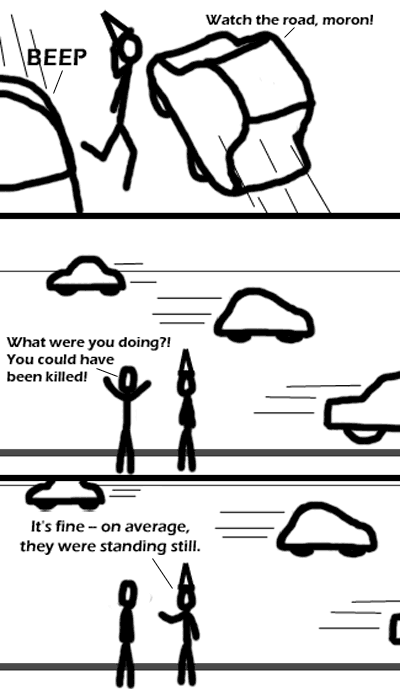

Comic JK 168
When I Feel Like It
⇤
<
?
>
⇥

⇤
<
?
>
⇥
Forum
.
RSS
.
Digg
.
Facebook
.
Reddit
.
Twitter
.
Stumbleupon
It's easy for dorky college boys to find your mother because not only is she absolutely massive, she's also - on average, standing still. I got the "standing still" part. But what does the "four vectors" part mean? Please enlighten me. two vectors: <- and -> four vectors: <- and -> and up and down also causes an average stand still >no, 4vector means forward/back, up/down, left/right, forward in time/back in time Right, at any one point in time, those cars obviously aren't moving [Yay Zeno]. But then, neither is our hero of the story. He should consider himself lucky he never ended up managing to occupy the same point in space-time as them..... I'm reminded of hash collisions, for some reason. :) >Now, just a second, that's like saying that a specific point on a curve doesn't have a slope. Because we cannot actually find a -point- in time, we can take the limit of it as <delta>y approaches 0. Since he's only crossed the street once during our observation, maybe he doesn't count as standing still on average. Also, the cars are all in the same place in the last two panels. No, they move--the frame just drops, it doesn't tighten. Compare where the characters are to where the middle car is. I like how either the driver on the left screamed "BEEP", or the car on the right actually says "Watch the road, moron!" when you honk the horn. --That's the sound MY car makes when I honk the horn. Doesn't yours? ---Now THAT's funny. This comic actually makes me laugh more often than xkcd does because I am a poopie face. ah, the Frogger theory.